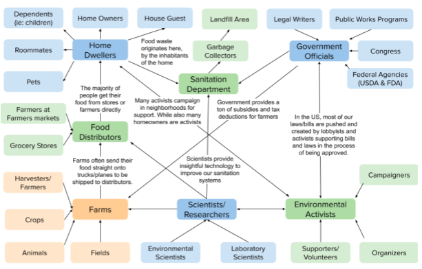

I followed the Design process from user research to high-fidelity mockups, over 11 weeks with my 3-student team. Our problem space was on food waste in the home of the future. And our user group would be the residents/homeowners cooking in their homes. Interviews were conducted, user personas created, and reseaerch was done to understand the problem space and help us define the problem space. We prototyped and ideated till we found our selling idea: Frodge. Frodge is a smart fridge that'll help any user reduce their fod waste. We created a video mock-up and designed panel screens to show to our users. We conducted usability testing to help us refine our idea and identify painpoints in our idea. This process culminated in a final prototype of Frodge.
Before ideating and deisgning a product, we conducted some research and user interviews within the food waste area. First identifying and exploring our design space, which is food waste in the home. Second, identify stakeholders. And lastly, conducting context studies with our stakeholders.
When diving into our design space, we established a few research questions to guide us through the large design space. These questions will reveal more information about the problems we face and will help us be more informed throughout the design process.
Food waste can occur at any point in the food production cycle from the farmers, to retailers, and even to consumers.
The food item itself is getting wasted even though most of our current food waste is edible (Food Waste Is a Massive Problem, 2020). The materials and resources used to grow the food is also getting wasted such as water, gasoline, energy, labor, pesticides, land, and fertilizers (Sustainable Food Is Better for the Environment, 2013).
The consumer level is where most of the food waste comes from. They account for 40%-50% of all food waste and it usually occurs in the home (Food Waste Is a Massive Problem, 2020)
According to the FDA, an estimated 30-40 percent of the food supply gets discarded without ever being eaten. This is an estimation made from the data they received of 133 billion pounds and $161 billion worth of food getting wasted in 2010. (Food Loss and Waste, 2020).
Food waste usually ends up in landfills, which then start to produce methane, a chemical that absorbs infrared radiation which leads to rise in temperatures and a direct contributor on global warming and climate change (Beam, 2015).
This includes:
These are groups who are considered when we design our product. We considered everyone that could be affected by the product we create. This'll give us a more holistic approach and inclusive design. The stakeholders include:
To see how all these stakeholders were connected and had an influence on food waste, I created a stakeholders map
Lastly, we conducted a few interviews with our stakeholders. My team and I conducted a interviews with users listed above. I conducted one with my friend Vy, a 3rd year college student sharing an apartment with 1 roommate. If you want to learn more about the interview, click here. But some of the big takeaways from conducting these interviews include:
For a short overview of my interview with Vy, below is a video highlighting the big takeaways
After ideating and coming up with a bunch of ideas, we chose our most promising idea. We did this by weighing the pros and cons of each idea and seeing which best solves our problem space. In the end, we chose Frodge, a smart fridge that'll help users minmize food waste.
For the components in the fridge, we decided to go big and ideate on features we thought would be impactful. So included in the inital proof-of-concept, we have a food monitoring system, trash receptical, alert system, and an intuitive panel for the fridge to interact with the user. Some of these ideas are very futuristic, so we did some subsitutions and hand waving components in our intial prototype. Below is our video.
After creating our intial prototype, we planned to do a few user evaluations. I did one with my mother to learn a little more about how she would respond to our alert system. I did a behaviorial analysis and interview with her to see how she would respond and whether it works. After the interview, I asked her questions on why she did what she did during the behaviorial analysis. Afterwards, I walked her through some of our designs and asked for her opinion on a few features
From doing this, we learned a few painpoints in our original idea:
From the user feedback and a redesign of our plans, we created a second iteration and made improvements for a more user centered prototype. The following is our final prototype:
This was my first time going through the design process, so it was a little difficult in the beginning. But I am really proud of the work I did with my team. We learned a lot, created something meaningful, and learned the design process. It requires a lot of user-focused work which I was not prepared for. But as we kept getting user feedback, our designs got better and user-focused.